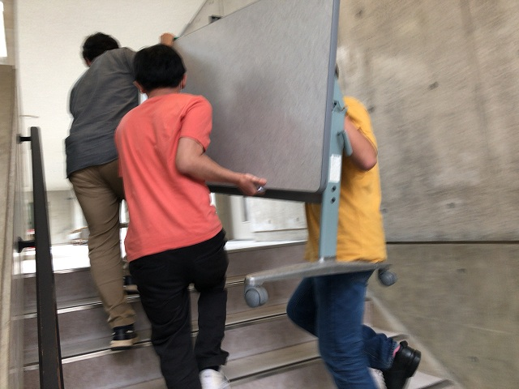
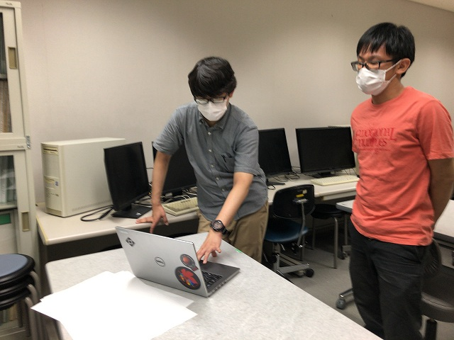
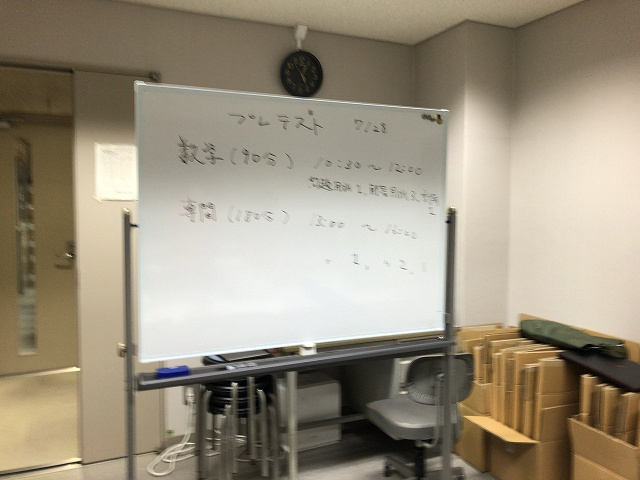
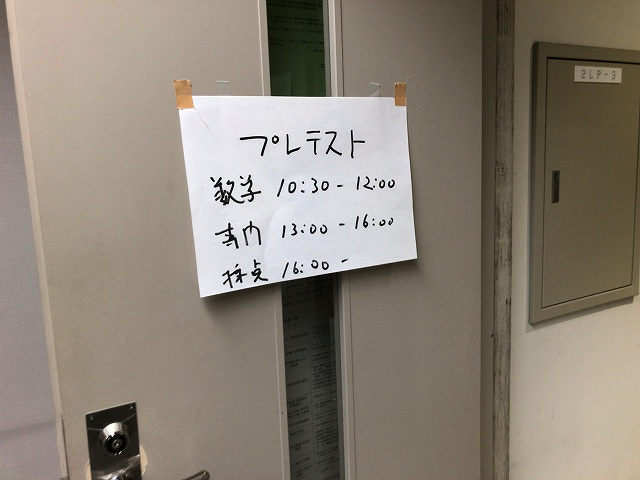
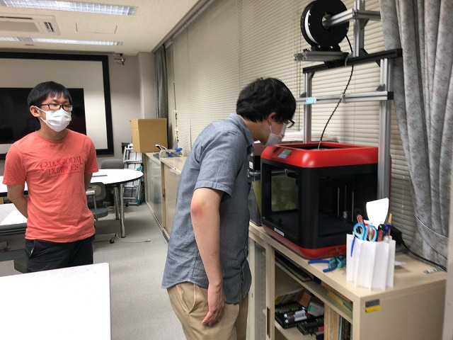
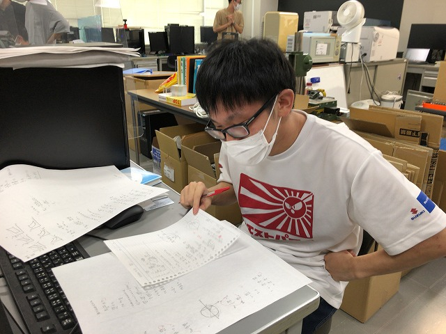
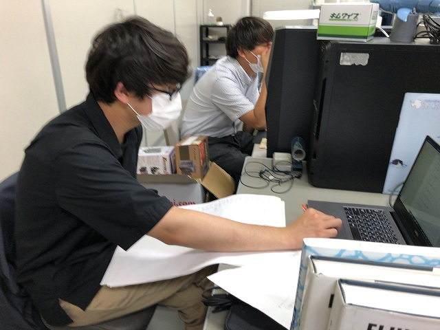
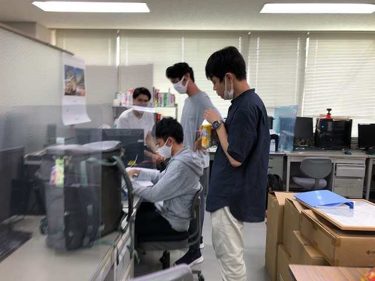
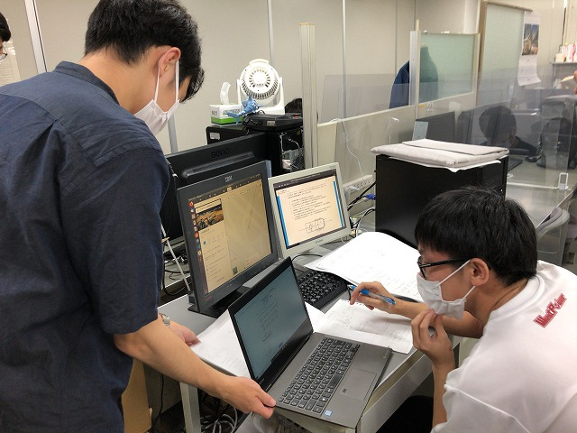
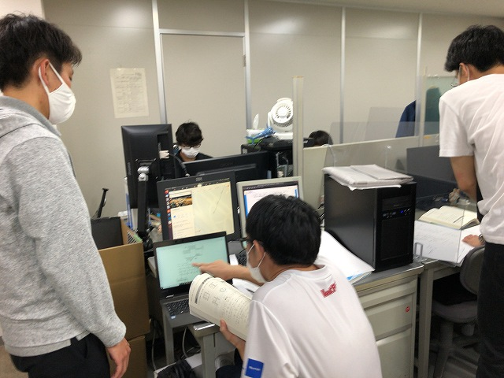

| ・ 大学院模試2021 (R03.07.28) | |||
3年前の大学院模試からしばらく推薦で通っていて久しぶりに開催。いつもM1が出題でしたが、今回は推薦で合格した3人が出題です。 数学はN井さん、4力はヒロキとM井さんです。 |
|||
|

新Fの部屋に1階倉庫から机搬入 |

問題の確認 | ||
|

試験時間割は本番と合わせています。 |

張り紙 | ||
|

明日の試験は動かせないので今のうち |

出題担当者の採点 | ||
|

部分点無しで採点 |

採点の吟味 | ||
|

ここは合ってるかも |

出題も難しいものです | ||